<!DOCTYPE HTML>
<html lang="zh-hans" >
    <head>
        <meta charset="UTF-8">
        <meta content="text/html; charset=utf-8" http-equiv="Content-Type">
        <title>Android的ss客户端 · 科学上网相关知识总结</title>
        <meta http-equiv="X-UA-Compatible" content="IE=edge" />
        <meta name="description" content="">
        <meta name="generator" content="GitBook 3.2.3">
        <meta name="author" content="Crifan Li <admin@crifan.com>">
        
        
    
    <link rel="stylesheet" href="../../../../gitbook/style.css">

    
            
                
                <link rel="stylesheet" href="../../../../gitbook/gitbook-plugin-anchors/plugin.css">
                
            
                
                <link rel="stylesheet" href="../../../../gitbook/gitbook-plugin-search-plus/search.css">
                
            
                
                <link rel="stylesheet" href="../../../../gitbook/gitbook-plugin-disqus/plugin.css">
                
            
                
                <link rel="stylesheet" href="../../../../gitbook/gitbook-plugin-prism/prism-atom-dark.css">
                
            
                
                <link rel="stylesheet" href="../../../../gitbook/gitbook-plugin-splitter/splitter.css">
                
            
                
                <link rel="stylesheet" href="../../../../gitbook/gitbook-plugin-tbfed-pagefooter/footer.css">
                
            
                
                <link rel="stylesheet" href="../../../../gitbook/gitbook-plugin-expandable-chapters-small/expandable-chapters-small.css">
                
            
                
                <link rel="stylesheet" href="../../../../gitbook/gitbook-plugin-donate/plugin.css">
                
            
                
                <link rel="stylesheet" href="../../../../gitbook/gitbook-plugin-callouts/plugin.css">
                
            
                
                <link rel="stylesheet" href="../../../../gitbook/gitbook-plugin-fontsettings/website.css">
                
            
                
                <link rel="stylesheet" href="../../../../gitbook/gitbook-plugin-theme-comscore/test.css">
                
            
        

    

    
        
    
        
    
        
    
        
    
        
    
        
    

        
    
    
    
    <meta name="HandheldFriendly" content="true"/>
    <meta name="viewport" content="width=device-width, initial-scale=1, user-scalable=no">
    <meta name="apple-mobile-web-app-capable" content="yes">
    <meta name="apple-mobile-web-app-status-bar-style" content="black">
    <link rel="apple-touch-icon-precomposed" sizes="152x152" href="../../../../gitbook/images/apple-touch-icon-precomposed-152.png">
    <link rel="shortcut icon" href="../../../../gitbook/images/favicon.ico" type="image/x-icon">

    
    <link rel="next" href="ss_ios.html" />
    
    
    <link rel="prev" href="ss_mac.html" />
    

    <style>
    @media only screen and (max-width: 640px) {
        .book-header .hidden-mobile {
            display: none;
        }
    }
    </style>
    <script>
        window["gitbook-plugin-github-buttons"] = {"buttons":[{"repo":"scientific_network_summary","user":"crifan","type":"star","count":true,"size":"small"},{"user":"crifan","type":"follow","width":"120","count":false,"size":"small"}]};
    </script>

    </head>
    <body>
        
<div class="book">
    <div class="book-summary">
        
            
<div id="book-search-input" role="search">
    <input type="text" placeholder="输入并搜索" />
</div>

            
                <nav role="navigation">
                


<ul class="summary">
    
    
    
        
        <li>
            <a href="http://www.crifan.com" target="_blank" class="custom-link">主页</a>
        </li>
    
    

    
    <li class="divider"></li>
    

    
        
        
    
        <li class="chapter " data-level="1.1" data-path="../../../../">
            
                <a href="../../../../">
            
                    
                        <b>1.1.</b>
                    
                    前言
            
                </a>
            

            
        </li>
    
        <li class="chapter " data-level="1.2" data-path="../../../../scientific_network_intro/">
            
                <a href="../../../../scientific_network_intro/">
            
                    
                        <b>1.2.</b>
                    
                    科学上网介绍
            
                </a>
            

            
            <ul class="articles">
                
    
        <li class="chapter " data-level="1.2.1" data-path="../../../../scientific_network_intro/what.html">
            
                <a href="../../../../scientific_network_intro/what.html">
            
                    
                        <b>1.2.1.</b>
                    
                    什么是科学上网
            
                </a>
            

            
        </li>
    
        <li class="chapter " data-level="1.2.2" data-path="../../../../scientific_network_intro/why.html">
            
                <a href="../../../../scientific_network_intro/why.html">
            
                    
                        <b>1.2.2.</b>
                    
                    为何要科学上网
            
                </a>
            

            
        </li>
    
        <li class="chapter " data-level="1.2.3" data-path="../../../../scientific_network_intro/various_tech_tool.html">
            
                <a href="../../../../scientific_network_intro/various_tech_tool.html">
            
                    
                        <b>1.2.3.</b>
                    
                    相关技术和工具
            
                </a>
            

            
        </li>
    

            </ul>
            
        </li>
    
        <li class="chapter " data-level="1.3" data-path="../../../">
            
                <a href="../../../">
            
                    
                        <b>1.3.</b>
                    
                    Shadowsocks
            
                </a>
            

            
            <ul class="articles">
                
    
        <li class="chapter " data-level="1.3.1" data-path="../../../shadowsocks_intro/">
            
                <a href="../../../shadowsocks_intro/">
            
                    
                        <b>1.3.1.</b>
                    
                    Shadowsocks介绍
            
                </a>
            

            
            <ul class="articles">
                
    
        <li class="chapter " data-level="1.3.1.1" data-path="../../../shadowsocks_intro/what_is_ss.html">
            
                <a href="../../../shadowsocks_intro/what_is_ss.html">
            
                    
                        <b>1.3.1.1.</b>
                    
                    Shadowsocks是什么
            
                </a>
            

            
        </li>
    
        <li class="chapter " data-level="1.3.1.2" data-path="../../../shadowsocks_intro/ss_official_site.html">
            
                <a href="../../../shadowsocks_intro/ss_official_site.html">
            
                    
                        <b>1.3.1.2.</b>
                    
                    Shadowsocks官网
            
                </a>
            

            
        </li>
    
        <li class="chapter " data-level="1.3.1.3" data-path="../../../shadowsocks_intro/ss_utilize_type.html">
            
                <a href="../../../shadowsocks_intro/ss_utilize_type.html">
            
                    
                        <b>1.3.1.3.</b>
                    
                    利用Shadowsocks的方式
            
                </a>
            

            
        </li>
    

            </ul>
            
        </li>
    
        <li class="chapter " data-level="1.3.2" data-path="../../">
            
                <a href="../../">
            
                    
                        <b>1.3.2.</b>
                    
                    服务器+客户端模式
            
                </a>
            

            
            <ul class="articles">
                
    
        <li class="chapter " data-level="1.3.2.1" data-path="../../ss_server/">
            
                <a href="../../ss_server/">
            
                    
                        <b>1.3.2.1.</b>
                    
                    Shadowsocks服务器端
            
                </a>
            

            
            <ul class="articles">
                
    
        <li class="chapter " data-level="1.3.2.1.1" data-path="../../ss_server/buy_ss_service/">
            
                <a href="../../ss_server/buy_ss_service/">
            
                    
                        <b>1.3.2.1.1.</b>
                    
                    购买第三方服务
            
                </a>
            

            
        </li>
    
        <li class="chapter " data-level="1.3.2.1.2" data-path="../../ss_server/self_build_ss_server.html">
            
                <a href="../../ss_server/self_build_ss_server.html">
            
                    
                        <b>1.3.2.1.2.</b>
                    
                    自己搭建服务器
            
                </a>
            

            
        </li>
    

            </ul>
            
        </li>
    
        <li class="chapter " data-level="1.3.2.2" data-path="../">
            
                <a href="../">
            
                    
                        <b>1.3.2.2.</b>
                    
                    Shadowsocks客户端
            
                </a>
            

            
            <ul class="articles">
                
    
        <li class="chapter " data-level="1.3.2.2.1" data-path="../client_common_logic.html">
            
                <a href="../client_common_logic.html">
            
                    
                        <b>1.3.2.2.1.</b>
                    
                    ss类客户端的通用逻辑
            
                </a>
            

            
        </li>
    
        <li class="chapter " data-level="1.3.2.2.2" data-path="./">
            
                <a href="./">
            
                    
                        <b>1.3.2.2.2.</b>
                    
                    ss的客户端
            
                </a>
            

            
            <ul class="articles">
                
    
        <li class="chapter " data-level="1.3.2.2.2.1" data-path="ss_windows.html">
            
                <a href="ss_windows.html">
            
                    
                        <b>1.3.2.2.2.1.</b>
                    
                    Windows的ss客户端
            
                </a>
            

            
        </li>
    
        <li class="chapter " data-level="1.3.2.2.2.2" data-path="ss_mac.html">
            
                <a href="ss_mac.html">
            
                    
                        <b>1.3.2.2.2.2.</b>
                    
                    Mac的ss客户端
            
                </a>
            

            
        </li>
    
        <li class="chapter active" data-level="1.3.2.2.2.3" data-path="ss_android.html">
            
                <a href="ss_android.html">
            
                    
                        <b>1.3.2.2.2.3.</b>
                    
                    Android的ss客户端
            
                </a>
            

            
        </li>
    
        <li class="chapter " data-level="1.3.2.2.2.4" data-path="ss_ios.html">
            
                <a href="ss_ios.html">
            
                    
                        <b>1.3.2.2.2.4.</b>
                    
                    iOS的ss客户端
            
                </a>
            

            
        </li>
    
        <li class="chapter " data-level="1.3.2.2.2.5" data-path="ss_other.html">
            
                <a href="ss_other.html">
            
                    
                        <b>1.3.2.2.2.5.</b>
                    
                    其他平台的ss客户端
            
                </a>
            

            
        </li>
    

            </ul>
            
        </li>
    
        <li class="chapter " data-level="1.3.2.2.3" data-path="../ssr_clients/">
            
                <a href="../ssr_clients/">
            
                    
                        <b>1.3.2.2.3.</b>
                    
                    SSR的客户端
            
                </a>
            

            
            <ul class="articles">
                
    
        <li class="chapter " data-level="1.3.2.2.3.1" data-path="../ssr_clients/ssr_mac.html">
            
                <a href="../ssr_clients/ssr_mac.html">
            
                    
                        <b>1.3.2.2.3.1.</b>
                    
                    Mac的SSR客户端
            
                </a>
            

            
        </li>
    

            </ul>
            
        </li>
    

            </ul>
            
        </li>
    

            </ul>
            
        </li>
    
        <li class="chapter " data-level="1.3.3" data-path="../../../router_mode/">
            
                <a href="../../../router_mode/">
            
                    
                        <b>1.3.3.</b>
                    
                    路由器模式
            
                </a>
            

            
        </li>
    

            </ul>
            
        </li>
    
        <li class="chapter " data-level="1.4" data-path="../../../../v2ray/">
            
                <a href="../../../../v2ray/">
            
                    
                        <b>1.4.</b>
                    
                    V2Ray
            
                </a>
            

            
        </li>
    
        <li class="chapter " data-level="1.5" data-path="../../../../trojan/">
            
                <a href="../../../../trojan/">
            
                    
                        <b>1.5.</b>
                    
                    Trojan
            
                </a>
            

            
        </li>
    
        <li class="chapter " data-level="1.6" data-path="../../../../appendix/">
            
                <a href="../../../../appendix/">
            
                    
                        <b>1.6.</b>
                    
                    附录
            
                </a>
            

            
            <ul class="articles">
                
    
        <li class="chapter " data-level="1.6.1" data-path="../../../../appendix/reference.html">
            
                <a href="../../../../appendix/reference.html">
            
                    
                        <b>1.6.1.</b>
                    
                    参考资料
            
                </a>
            

            
        </li>
    

            </ul>
            
        </li>
    

    

    <li class="divider"></li>

    <li>
        <a href="https://www.gitbook.com" target="blank" class="gitbook-link">
            本书使用 GitBook 发布
        </a>
    </li>
</ul>


                </nav>
            
        
    </div>

    <div class="book-body">
        
            <div class="body-inner">
                
                    

<div class="book-header" role="navigation">
    

    <!-- Title -->
    <h1>
        <i class="fa fa-circle-o-notch fa-spin"></i>
        <a href="../../../.." >Android的ss客户端</a>
    </h1>
</div>


                    <div class="page-wrapper" tabindex="-1" role="main">
                        <div class="page-inner">
                            
<div class="search-plus" id="book-search-results">
    <div class="search-noresults">
    
                                <section class="normal markdown-section">
                                
                                <h1 id="android&#x4E2D;&#x7684;shadowsocks&#x5BA2;&#x6237;&#x7AEF;"><a name="android&#x4E2D;&#x7684;shadowsocks&#x5BA2;&#x6237;&#x7AEF;" class="plugin-anchor" href="#android&#x4E2D;&#x7684;shadowsocks&#x5BA2;&#x6237;&#x7AEF;"><i class="fa fa-link" aria-hidden="true"></i></a>Android&#x4E2D;&#x7684;Shadowsocks&#x5BA2;&#x6237;&#x7AEF;</h1>
<div class="panel panel-info"><div class="panel-heading"><h3 class="panel-title" id="-&#x8BE6;&#x7EC6;&#x8FC7;&#x7A0B;&#x89C1;&#x5355;&#x72EC;&#x5E16;&#x5B50;"><i class="fa fa-info"></i>  &#x8BE6;&#x7EC6;&#x8FC7;&#x7A0B;&#x89C1;&#x5355;&#x72EC;&#x5E16;&#x5B50;</h3></div><div class="panel-body"><p>&#x66F4;&#x591A;&#x7EC6;&#x8282;&#x8BE6;&#x89C1;&#xFF1A;<a href="https://www.crifan.com/install_and_use_android_shadowsocks_client_support_chacha20_ietf_poly1305/" target="_blank">&#x3010;&#x8BB0;&#x5F55;&#x3011;&#x5B89;&#x88C5;&#x548C;&#x4F7F;&#x7528;&#x652F;&#x6301;chacha20-ietf-poly1305&#x7684;Android&#x7684;shadowsocks&#x5BA2;&#x6237;&#x7AEF; &#x2013; &#x5728;&#x8DEF;&#x4E0A;</a></p><p>&#x4E0B;&#x9762;&#x628A;&#x5173;&#x952E;&#x6B65;&#x9AA4;&#x6574;&#x7406;&#x5982;&#x4E0B;&#x4F9B;&#x53C2;&#x8003;&#x3002;</p></div></div>
<h2 id="&#x4E0B;&#x8F7D;&#x548C;&#x5B89;&#x88C5;"><a name="&#x4E0B;&#x8F7D;&#x548C;&#x5B89;&#x88C5;" class="plugin-anchor" href="#&#x4E0B;&#x8F7D;&#x548C;&#x5B89;&#x88C5;"><i class="fa fa-link" aria-hidden="true"></i></a>&#x4E0B;&#x8F7D;&#x548C;&#x5B89;&#x88C5;</h2>
<p>&#x4E24;&#x79CD;&#x65B9;&#x5F0F;&#xFF1A;</p>
<ul>
<li>&#x81EA;&#x5DF1;&#x53BB;<code>github</code>&#x4E0B;&#x8F7D;<code>apk</code>&#x5B89;&#x88C5;&#x5305;&#x540E;&#x81EA;&#x5DF1;&#x5B89;&#x88C5;<ul>
<li>&#x53BB;<a href="https://github.com/shadowsocks/shadowsocks-android/releases" target="_blank">Releases &#xB7; shadowsocks/shadowsocks-android</a> &#x53EF;&#x4EE5;&#x4E0B;&#x8F7D;&#x5230;apk&#xFF0C;&#x6BD4;&#x5982;&#xFF1A;<a href="https://github.com/shadowsocks/shadowsocks-android/releases/download/v4.6.5/shadowsocks--universal-4.6.5.apk" target="_blank">shadowsocks--universal-4.6.5.apk</a>&#xFF1A;</li>
<li>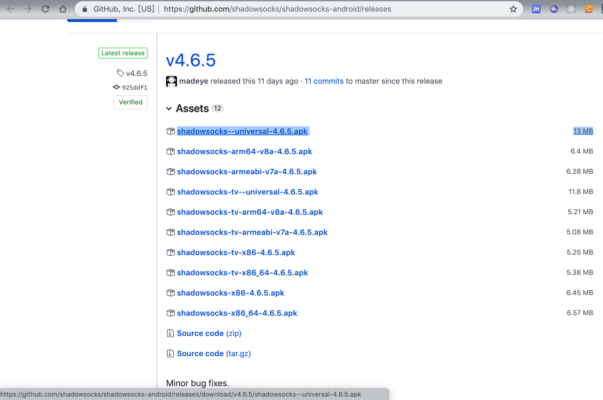</li>
<li>&#x7136;&#x540E;&#x5B89;&#x88C5;&#x5230;Android&#x624B;&#x673A;&#x4E2D;&#x5373;&#x53EF;&#xFF1A;</li>
<li>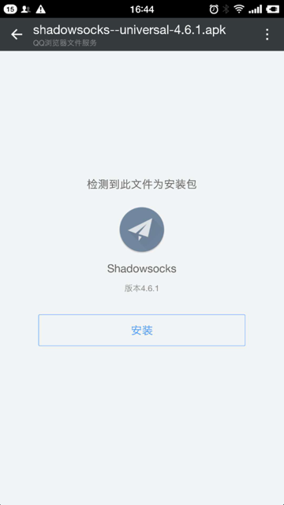</li>
</ul>
</li>
<li>&#x4ECE;&#x5E94;&#x7528;&#x5E02;&#x573A;<code>Google Play</code>&#x53BB;&#x641C;&#x7D22;&#x5E76;&#x5B89;&#x88C5;<ul>
<li><a href="https://play.google.com/store/apps/details?id=com.github.shadowsocks" target="_blank">Shadowsocks - Android Apps on Google Play</a></li>
</ul>
</li>
</ul>
<h2 id="&#x6DFB;&#x52A0;&#x914D;&#x7F6E;"><a name="&#x6DFB;&#x52A0;&#x914D;&#x7F6E;" class="plugin-anchor" href="#&#x6DFB;&#x52A0;&#x914D;&#x7F6E;"><i class="fa fa-link" aria-hidden="true"></i></a>&#x6DFB;&#x52A0;&#x914D;&#x7F6E;</h2>
<p>&#x6253;&#x5F00;ss&#x5BA2;&#x6237;&#x7AEF;&#xFF0C;&#x7136;&#x540E;&#x53BB;&#x6DFB;&#x52A0;&#x670D;&#x52A1;&#x5668;&#x8282;&#x70B9;&#x7684;&#x914D;&#x7F6E;&#xFF0C;&#x4E3B;&#x8981;&#x662F;&#x53BB;&#x914D;&#x7F6E;&#x670D;&#x52A1;&#x5668;&#x7684;<code>&#x5730;&#x5740;</code>&#xFF0C;<code>&#x7AEF;&#x53E3;</code>&#xFF0C;<code>&#x5BC6;&#x7801;</code>&#xFF0C;<code>&#x52A0;&#x5BC6;&#x65B9;&#x5F0F;</code>&#x7B49;&#x5185;&#x5BB9;&#x3002;</p>
<div class="panel panel-info"><div class="panel-heading"><h3 class="panel-title" id="-&#x5BF9;ss&#x7684;&#x914D;&#x7F6E;&#x4E0D;&#x719F;&#x6089;&#x7684;&#x53EF;&#x53C2;&#x8003;&#x901A;&#x7528;&#x7684;&#x903B;&#x8F91;"><i class="fa fa-info"></i>  &#x5BF9;ss&#x7684;&#x914D;&#x7F6E;&#x4E0D;&#x719F;&#x6089;&#x7684;&#x53EF;&#x53C2;&#x8003;&#x901A;&#x7528;&#x7684;&#x903B;&#x8F91;</h3></div><div class="panel-body"><p>&#x5404;&#x79CD;ss&#x7684;&#x5BA2;&#x6237;&#x7AEF;&#x7684;&#x914D;&#x7F6E;&#x7684;&#x903B;&#x8F91;&#x90FD;&#x662F;&#x4E00;&#x6837;&#x7684;&#xFF0C;&#x5982;&#x679C;&#x4E0D;&#x6E05;&#x695A;&#x53EF;&#x53BB;&#x53C2;&#x8003;&#xFF1A;<a href="https://book.crifan.com/books/scientific_network_summary/website/server_client_mode/ss_client/client_common_logic.html" target="_blank">ss&#x5BA2;&#x6237;&#x7AEF;&#x7684;&#x901A;&#x7528;&#x903B;&#x8F91; &#xB7; &#x79D1;&#x5B66;&#x4E0A;&#x7F51;&#x76F8;&#x5173;&#x77E5;&#x8BC6;&#x603B;&#x7ED3;</a></p></div></div>
<p>&#x6B64;&#x5904;&#x70B9;&#x51FB;&#x53F3;&#x4E0A;&#x89D2;&#x7684;&#x52A0;&#x53F7;<code>&#x2795;</code>&#xFF1A;</p>
<p>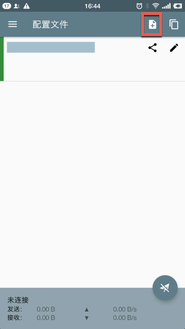</p>
<p>&#x4F1A;&#x663E;&#x793A;&#x51FA;3&#x79CD;&#x65B9;&#x5F0F;&#xFF1A;</p>
<p>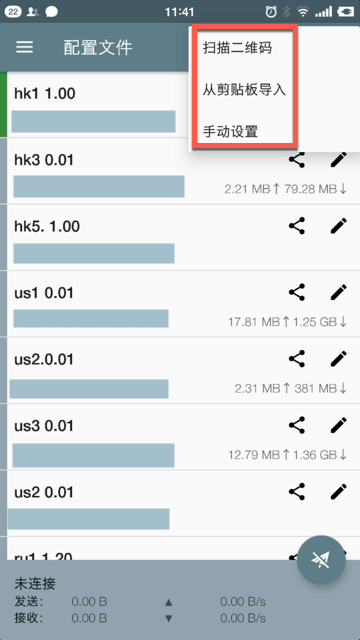</p>
<ul>
<li><code>&#x626B;&#x63CF;&#x4E8C;&#x7EF4;&#x7801;</code>&#xFF1A;&#x626B;&#x63CF;&#x4E8C;&#x7EF4;&#x7801;&#x540E;&#x81EA;&#x52A8;&#x89E3;&#x6790;&#x5E76;&#x6DFB;&#x52A0;&#x914D;&#x7F6E;</li>
<li><code>&#x4ECE;&#x526A;&#x8D34;&#x677F;&#x5BFC;&#x5165;</code>&#xFF1A;&#x4E00;&#x822C;&#x662F;&#x4ECE;&#x522B;&#x5904;&#x62F7;&#x8D1D;&#x4E86;&#x5BF9;&#x5E94;&#x670D;&#x52A1;&#x5668;&#x914D;&#x7F6E;&#x7684;&#x5B57;&#x7B26;&#x4E32;&#xFF0C;&#x7136;&#x540E;&#x518D;&#x6765;&#x6B64;&#x5904;&#x7C98;&#x8D34;&#x3002;<ul>
<li>&#x81EA;&#x5DF1;&#x5F88;&#x5C11;&#x7528;&#x5230;&#x6B64;&#x65B9;&#x5F0F;</li>
</ul>
</li>
<li><code>&#x624B;&#x52A8;&#x8BBE;&#x7F6E;</code>&#xFF1A;&#x81EA;&#x52A8;&#x624B;&#x52A8;&#x586B;&#x5199;&#x914D;&#x7F6E;&#x4FE1;&#x606F;<ul>
<li>&#x867D;&#x7136;&#x7A0D;&#x5FAE;&#x9EBB;&#x70E6;&#x70B9;&#xFF0C;&#x4F46;&#x662F;&#x6700;&#x901A;&#x7528;</li>
</ul>
</li>
</ul>
<p>&#x4E00;&#x822C;&#x6765;&#x8BF4;&#xFF0C;&#x63A8;&#x8350;<code>&#x626B;&#x7801;</code>&#x6DFB;&#x52A0;&#xFF0C;&#x56E0;&#x4E3A;&#x5F88;&#x65B9;&#x4FBF;</p>
<p>-&#x300B; &#x4F46;&#x662F;&#x4E0B;&#x9762;&#x4F1A;&#x89E3;&#x91CA;&#x6B64;&#x5904;&#x5B89;&#x5353;&#x4E2D;&#x7531;&#x4E8E;&#x626B;&#x7801;&#x9700;&#x8981;<code>Google Play</code>&#x800C;&#x5BFC;&#x81F4;&#x6B7B;&#x5FAA;&#x73AF;&#xFF0C;&#x800C;&#x4E0D;&#x65B9;&#x4FBF;&#x626B;&#x7801;</p>
<p>-&#x300B; &#x6240;&#x4EE5;&#x6B64;&#x5904;&#x63A8;&#x8350;<code>&#x624B;&#x52A8;&#x6DFB;&#x52A0;</code></p>
<p>&#x4E0D;&#x8FC7;&#x5148;&#x8BF4;&#x8BF4;&#x5982;&#x679C;&#x8981;&#x626B;&#x7801;&#xFF0C;&#x5982;&#x4F55;&#x64CD;&#x4F5C;&#xFF1A;</p>
<h3 id="&#x626B;&#x7801;&#x6DFB;&#x52A0;&#x914D;&#x7F6E;"><a name="&#x626B;&#x7801;&#x6DFB;&#x52A0;&#x914D;&#x7F6E;" class="plugin-anchor" href="#&#x626B;&#x7801;&#x6DFB;&#x52A0;&#x914D;&#x7F6E;"><i class="fa fa-link" aria-hidden="true"></i></a>&#x626B;&#x7801;&#x6DFB;&#x52A0;&#x914D;&#x7F6E;</h3>
<p>&#x5728;&#x626B;&#x63CF;&#x4E4B;&#x524D;&#xFF0C;&#x5148;&#x8981;&#x6709;&#x4E8C;&#x7EF4;&#x7801;&#x53EF;&#x4EE5;&#x626B;&#xFF0C;&#x8D2D;&#x4E70;&#x540E;&#x53BB;&#x540E;&#x53F0;&#x914D;&#x7F6E;&#x9875;&#x9762;&#x4E2D;&#x53EF;&#x4EE5;&#x627E;&#x5230;&#x4E8C;&#x7EF4;&#x7801;&#x3002;</p>
<p>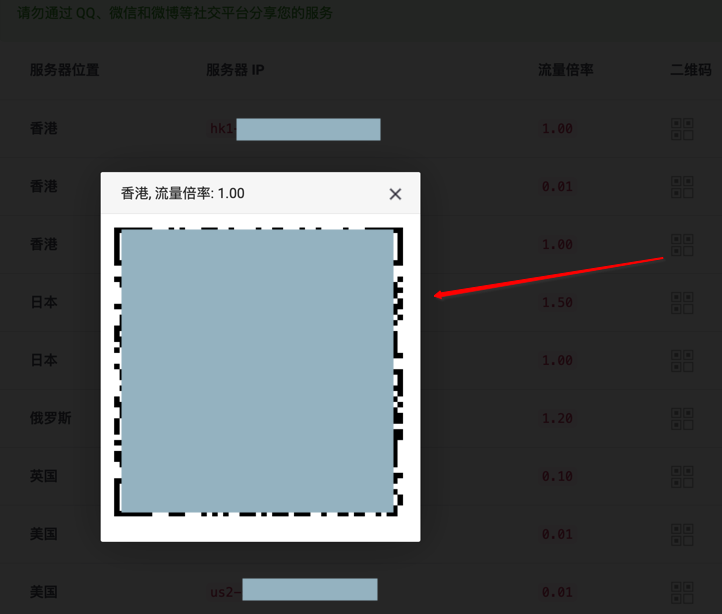</p>
<div class="panel panel-warning"><div class="panel-heading"><h3 class="panel-title" id="-&#x5B89;&#x5353;&#x626B;&#x7801;&#x6DFB;&#x52A0;&#x914D;&#x7F6E;&#x9700;&#x8981;&#x66F4;&#x65B0;google-play&#x670D;&#x52A1;"><i class="fa fa-exclamation-triangle"></i>  &#x5B89;&#x5353;&#x626B;&#x7801;&#x6DFB;&#x52A0;&#x914D;&#x7F6E;&#x9700;&#x8981;&#x66F4;&#x65B0;Google Play&#x670D;&#x52A1;</h3></div><div class="panel-body"><p>&#x6B64;&#x5904;&#x5B9E;&#x8DF5;&#x53D1;&#x73B0;&#xFF0C;&#x5B89;&#x5353;&#x7AEF;&#x626B;&#x7801;&#x53BB;&#x6DFB;&#x52A0;&#x914D;&#x7F6E;&#xFF1A;</p><p>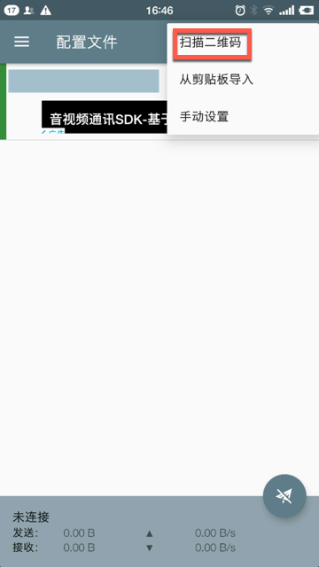</p><p>&#x7ADF;&#x7136;&#x4F1A;&#x51FA;&#x73B0;&#x63D0;&#x793A;&#xFF1A;<code>&#x66F4;&#x65B0;Google Play&#x670D;&#x52A1;&#xFF0C;&#x60A8;&#x5FC5;&#x987B;&#x5148;&#x66F4;&#x65B0;Google Play&#x670D;&#x52A1;&#xFF0C;&#x7136;&#x540E;&#x624D;&#x80FD;&#x8FD0;&#x884C;shadowsocks</code></p><p>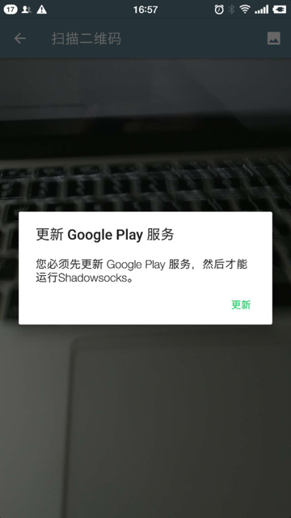</p><p>&#x800C;<code>Google Play&#x670D;&#x52A1;</code>&#x672C;&#x8EAB;&#xFF0C;&#x5374;&#x53C8;&#x9700;&#x8981;&#x7FFB;&#x5899;&#x624D;&#x80FD;&#x66F4;&#x65B0;&#xFF0C;&#x800C;&#x6B64;&#x5904;&#x5C31;&#x662F;&#x8981;&#x53BB;&#x7FFB;&#x5899;&#xFF0C;&#x5BFC;&#x81F4;&#x6B7B;&#x5FAA;&#x73AF;&#x4E86;&#xFF0C;&#x6240;&#x4EE5;&#x6B64;&#x8DEF;&#x6682;&#x65F6;&#x4E0D;&#x901A;&#x3002;</p></div></div>
<h3 id="&#x624B;&#x52A8;&#x6DFB;&#x52A0;&#x914D;&#x7F6E;"><a name="&#x624B;&#x52A8;&#x6DFB;&#x52A0;&#x914D;&#x7F6E;" class="plugin-anchor" href="#&#x624B;&#x52A8;&#x6DFB;&#x52A0;&#x914D;&#x7F6E;"><i class="fa fa-link" aria-hidden="true"></i></a>&#x624B;&#x52A8;&#x6DFB;&#x52A0;&#x914D;&#x7F6E;</h3>
<p>&#x6240;&#x4EE5;&#x6B64;&#x5904;&#x4E3A;&#x4E86;&#x80FD;&#x6B63;&#x5E38;&#x6DFB;&#x52A0;&#x914D;&#x7F6E;&#xFF0C;&#x5EFA;&#x8BAE;&#x7528;<code>&#x624B;&#x52A8;&#x8BBE;&#x7F6E;</code>&#x7684;&#x65B9;&#x5F0F;&#x53BB;&#x6DFB;&#x52A0;ss&#x670D;&#x52A1;&#x5668;&#x914D;&#x7F6E;&#x3002;</p>
<p>&#x70B9;&#x51FB;<code>&#x624B;&#x52A8;&#x914D;&#x7F6E;</code>&#x540E;&#xFF0C;&#x586B;&#x5199;&#x5982;&#x4E0B;&#x4FE1;&#x606F;&#xFF1A;</p>
<ul>
<li>ss&#x670D;&#x52A1;&#x7684;&#x914D;&#x7F6E;&#xFF1A;<ul>
<li><code>&#x914D;&#x7F6E;&#x540D;&#x79F0;</code>&#xFF1A;&#x53EF;&#x9009;&#xFF0C;&#x6BD4;&#x5982;&#x586B;&#x5199;<code>hk1 1.00</code>&#xFF0C;&#x8868;&#x793A;&#x8282;&#x70B9;&#x540D;&#x548C;&#x6D41;&#x91CF;&#x8D39;&#x7387;&#xFF0C;&#x65B9;&#x4FBF;&#x533A;&#x5206;&#x4E0D;&#x540C;&#x8282;&#x70B9;</li>
<li><code>&#x670D;&#x52A1;&#x5668;</code>&#xFF1A;ss&#x670D;&#x52A1;&#x5668;&#x7684;&#x5730;&#x5740;</li>
<li><code>&#x8FDC;&#x7A0B;&#x7AEF;&#x53E3;</code>&#xFF1A;ss&#x670D;&#x52A1;&#x5668;&#x7684;&#x7AEF;&#x53E3;</li>
<li><code>&#x5BC6;&#x7801;</code>&#xFF1A;ss&#x7684;&#x5BC6;&#x7801;<ul>
<li>&#x81EA;&#x5EFA;ss&#x670D;&#x52A1;&#x5668;&#x6216;&#x8005;&#x8D2D;&#x4E70;&#x7684;ss&#x670D;&#x52A1;&#x5668;&#xFF0C;&#x90FD;&#x4F1A;&#x63D0;&#x4F9B;&#x76F8;&#x5173;&#x5BC6;&#x7801;&#x7ED9;&#x4F60;&#x7684;</li>
</ul>
</li>
<li><code>&#x52A0;&#x5BC6;&#x65B9;&#x5F0F;</code>&#xFF1A;&#x6BD4;&#x5982;&#x6700;&#x65B0;&#x7684;&#xFF1A;<code>chacha20-ietf-poly1305</code><ul>
<li>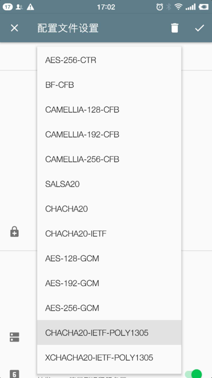</li>
</ul>
</li>
</ul>
</li>
<li>&#x5176;&#x4ED6;&#x8F6F;&#x4EF6;&#x7684;&#x914D;&#x7F6E;<ul>
<li><code>&#x8DEF;&#x7531;</code>&#xFF1A;&#x9ED8;&#x8BA4;&#x662F;<code>&#x5168;&#x5C40;</code>&#xFF0C;&#x5EFA;&#x8BAE;&#x6539;&#x4E3A;&#xFF1A;<code>&#x7ED5;&#x8FC7;&#x5C40;&#x57DF;&#x7F51;&#x548C;&#x4E2D;&#x56FD;&#x5927;&#x9646;&#x5730;&#x5740;</code><ul>
<li>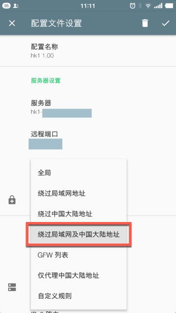</li>
</ul>
</li>
</ul>
</li>
</ul>
<p>&#x586B;&#x5199;&#x914D;&#x7F6E;&#x540E;&#x5982;&#x4E0B;&#xFF1A;</p>
<p>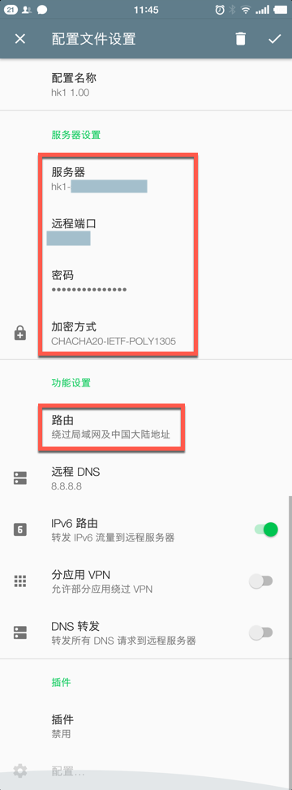</p>
<p>&#x6309;&#x7167;&#x540C;&#x6837;&#x65B9;&#x5F0F;&#xFF0C;&#x53BB;&#x6DFB;&#x52A0;&#x5176;&#x4ED6;&#x8282;&#x70B9;&#x7684;&#x670D;&#x52A1;&#x5668;&#x914D;&#x7F6E;&#x3002;</p>
<h3 id="&#x5F00;&#x59CB;&#x4F7F;&#x7528;"><a name="&#x5F00;&#x59CB;&#x4F7F;&#x7528;" class="plugin-anchor" href="#&#x5F00;&#x59CB;&#x4F7F;&#x7528;"><i class="fa fa-link" aria-hidden="true"></i></a>&#x5F00;&#x59CB;&#x4F7F;&#x7528;</h3>
<p>&#x70B9;&#x51FB;<code>&#x9009;&#x4E2D;</code>&#x67D0;&#x4E2A;&#x670D;&#x52A1;&#x5668;&#x8282;&#x70B9;&#xFF08;&#x5DE6;&#x8FB9;&#x4F1A;&#x6709;&#x7AD6;&#x5411;&#x7684;&#x7EFF;&#x8272;&#x63D0;&#x793A;&#xFF09;&#xFF0C;&#x70B9;&#x51FB;&#x53F3;&#x4E0B;&#x89D2;<code>&#x7EB8;&#x98DE;&#x673A;&#x6309;&#x94AE;</code>&#x53BB;&#x8FDE;&#x63A5;&#xFF0C;&#x8FDE;&#x63A5;&#x540E;&#xFF1A;</p>
<p>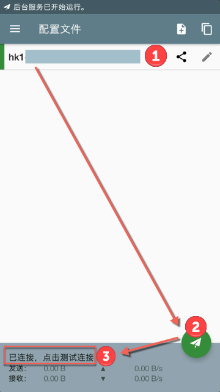</p>
<p>&#x70B9;&#x51FB;<code>&#x5DF2;&#x8FDE;&#x63A5;&#xFF0C;&#x70B9;&#x51FB;&#x6D4B;&#x8BD5;&#x8FDE;&#x63A5;</code>&#x53BB;&#x6D4B;&#x8BD5;&#x901F;&#x5EA6;&#x5982;&#x4F55;&#xFF1A;</p>
<p>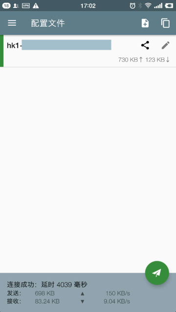</p>
<p>&#x5C31;&#x8868;&#x793A;&#x53EF;&#x4EE5;&#x4F7F;&#x7528;&#x4E86;&#xFF0C;&#x540C;&#x65F6;&#x7CFB;&#x7EDF;&#x901A;&#x77E5;&#x4E2D;&#x4E5F;&#x4F1A;&#x6709;VPN&#x548C;&#x6D41;&#x91CF;&#x7684;&#x63D0;&#x793A;&#xFF1A;</p>
<p>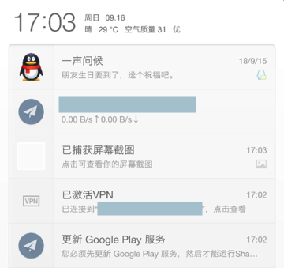</p>
<p>&#x7136;&#x540E;&#x5C31;&#x53EF;&#x4EE5;&#x6109;&#x5FEB;&#x7684;&#x79D1;&#x5B66;&#x4E0A;&#x7F51;&#x4E86;&#xFF0C;&#x6BD4;&#x5982;&#xFF1A;</p>
<p>&#x53BB;&#x7528;<code>youtube</code>&#x770B;&#x89C6;&#x9891;&#xFF1A;</p>
<p></p>
<p>&#x53BB;&#x7528;&#x624B;&#x673A;&#x6D4F;&#x89C8;&#x5668;&#x4E0A;<code>google</code>&#x67E5;&#x8D44;&#x6599;&#xFF1A;</p>
<p></p>
<footer class="page-footer"><span class="copyright">crifan.com&#xFF0C;&#x4F7F;&#x7528;<a href="https://creativecommons.org/licenses/by/4.0/deed.zh" target="_blank">&#x7F72;&#x540D;4.0&#x56FD;&#x9645;(CC BY 4.0)&#x534F;&#x8BAE;</a>&#x53D1;&#x5E03; all right reserved&#xFF0C;powered by Gitbook</span><span class="footer-modification">&#x6700;&#x540E;&#x66F4;&#x65B0;&#xFF1A;
2020-07-10 21:51:08
</span></footer>
                                
                                </section>
                            
    </div>
    <div class="search-results">
        <div class="has-results">
            
            <h1 class="search-results-title"><span class='search-results-count'></span> results matching "<span class='search-query'></span>"</h1>
            <ul class="search-results-list"></ul>
            
        </div>
        <div class="no-results">
            
            <h1 class="search-results-title">No results matching "<span class='search-query'></span>"</h1>
            
        </div>
    </div>
</div>

                        </div>
                    </div>
                
            </div>

            
                
                <a href="ss_mac.html" class="navigation navigation-prev " aria-label="Previous page: Mac的ss客户端">
                    <i class="fa fa-angle-left"></i>
                </a>
                
                
                <a href="ss_ios.html" class="navigation navigation-next " aria-label="Next page: iOS的ss客户端">
                    <i class="fa fa-angle-right"></i>
                </a>
                
            
        
    </div>

    <script>
        var gitbook = gitbook || [];
        gitbook.push(function() {
            gitbook.page.hasChanged({"page":{"title":"Android的ss客户端","level":"1.3.2.2.2.3","depth":5,"next":{"title":"iOS的ss客户端","level":"1.3.2.2.2.4","depth":5,"path":"ss/server_client_mode/ss_client/ss_clients/ss_ios.md","ref":"ss/server_client_mode/ss_client/ss_clients/ss_ios.md","articles":[]},"previous":{"title":"Mac的ss客户端","level":"1.3.2.2.2.2","depth":5,"path":"ss/server_client_mode/ss_client/ss_clients/ss_mac.md","ref":"ss/server_client_mode/ss_client/ss_clients/ss_mac.md","articles":[]},"dir":"ltr"},"config":{"plugins":["google-adsense","theme-comscore","anchors","-lunr","-search","search-plus","disqus","-highlight","prism","prism-themes","github-buttons","splitter","-sharing","sharing-plus","tbfed-pagefooter","expandable-chapters-small","ga","donate","sitemap-general","copy-code-button","callouts","toolbar-button"],"root":"./src","styles":{"website":"styles/website.css","pdf":"styles/pdf.css","epub":"styles/epub.css","mobi":"styles/mobi.css","ebook":"styles/ebook.css","print":"styles/print.css"},"pluginsConfig":{"tbfed-pagefooter":{"copyright":"crifan.com，使用<a href='https://creativecommons.org/licenses/by/4.0/deed.zh'>署名4.0国际(CC BY 4.0)协议</a>发布","modify_label":"最后更新：","modify_format":"YYYY-MM-DD HH:mm:ss"},"prism":{"css":["prism-themes/themes/prism-atom-dark.css"]},"disqus":{"useIdentifier":false,"shortName":"crifan"},"callouts":{"showTypeInHeader":false},"toolbar-button":{"label":"下载PDF","url":"https://crifan.github.io/scientific_network_summary/pdf/scientific_network_summary.pdf","icon":"fa-file-pdf-o"},"splitter":{},"sharing-plus":{"qq":false,"all":["facebook","google","twitter","instapaper","linkedin","pocket","stumbleupon"],"douban":false,"facebook":true,"weibo":false,"instapaper":false,"whatsapp":false,"hatenaBookmark":false,"twitter":true,"messenger":false,"line":false,"vk":false,"pocket":true,"google":false,"viber":false,"stumbleupon":false,"qzone":false,"linkedin":false},"donate":{"alipay":"https://www.crifan.com/files/res/crifan_com/crifan_alipay_pay.jpg","alipayText":"支付宝打赏给Crifan","button":"打赏","title":"","wechat":"https://www.crifan.com/files/res/crifan_com/crifan_wechat_pay.jpg","wechatText":"微信打赏给Crifan"},"sitemap-general":{"prefix":"https://crifan.github.io/scientific_network_summary/website/"},"fontsettings":{"theme":"white","family":"sans","size":2},"theme-comscore":{},"prism-themes":{},"google-adsense":{"ads":[{"client":"ca-pub-6626240105039250"}]},"github-buttons":{"buttons":[{"repo":"scientific_network_summary","user":"crifan","type":"star","count":true,"size":"small"},{"user":"crifan","type":"follow","width":"120","count":false,"size":"small"}]},"expandable-chapters-small":{},"copy-code-button":{},"ga":{"configuration":"auto","token":"UA-28297199-1"},"sharing":{"qq":true,"all":["douban","facebook","google","instapaper","line","linkedin","messenger","pocket","qq","qzone","stumbleupon","twitter","viber","vk","weibo","whatsapp"],"douban":false,"facebook":true,"weibo":true,"instapaper":false,"whatsapp":false,"hatenaBookmark":false,"twitter":true,"messenger":false,"line":false,"vk":false,"pocket":false,"google":false,"viber":false,"stumbleupon":false,"qzone":false,"linkedin":false},"theme-default":{"styles":{"website":"styles/website.css","pdf":"styles/pdf.css","epub":"styles/epub.css","mobi":"styles/mobi.css","ebook":"styles/ebook.css","print":"styles/print.css"},"showLevel":true},"anchors":{},"search-plus":{}},"theme":"default","author":"Crifan Li <admin@crifan.com>","pdf":{"pageNumbers":true,"fontSize":12,"fontFamily":"Arial","paperSize":"a4","chapterMark":"pagebreak","pageBreaksBefore":"/","margin":{"right":62,"left":62,"top":56,"bottom":56}},"structure":{"langs":"LANGS.md","readme":"README.md","glossary":"GLOSSARY.md","summary":"SUMMARY.md"},"variables":{},"title":"科学上网相关知识总结","language":"zh-hans","links":{"sidebar":{"主页":"http://www.crifan.com"}},"gitbook":"3.2.3","description":"总结关于科学上网的概念、方法及工具。目的是用于看了后，知道科学上网的概念以及如何使用合适的工具去实现自己科学上网的需求。主要介绍了最近主流的shadowsocks，和最新的V2Ray和Trojan等技术。"},"file":{"path":"ss/server_client_mode/ss_client/ss_clients/ss_android.md","mtime":"2020-07-10T13:51:08.500Z","type":"markdown"},"gitbook":{"version":"3.2.3","time":"2021-07-22T14:33:54.779Z"},"basePath":"../../../..","book":{"language":""}});
        });
    </script>
</div>

        
    <script src="../../../../gitbook/gitbook.js"></script>
    <script src="../../../../gitbook/theme.js"></script>
    
        
        <script src="../../../../gitbook/gitbook-plugin-google-adsense/plugin.js"></script>
        
    
        
        <script src="../../../../gitbook/gitbook-plugin-search-plus/jquery.mark.min.js"></script>
        
    
        
        <script src="../../../../gitbook/gitbook-plugin-search-plus/search.js"></script>
        
    
        
        <script src="https://cdnjs.cloudflare.com/ajax/libs/URI.js/1.16.1/URI.min.js"></script>
        
    
        
        <script src="../../../../gitbook/gitbook-plugin-disqus/plugin.js"></script>
        
    
        
        <script src="../../../../gitbook/gitbook-plugin-github-buttons/plugin.js"></script>
        
    
        
        <script src="../../../../gitbook/gitbook-plugin-splitter/splitter.js"></script>
        
    
        
        <script src="../../../../gitbook/gitbook-plugin-sharing-plus/buttons.js"></script>
        
    
        
        <script src="../../../../gitbook/gitbook-plugin-expandable-chapters-small/expandable-chapters-small.js"></script>
        
    
        
        <script src="../../../../gitbook/gitbook-plugin-ga/plugin.js"></script>
        
    
        
        <script src="../../../../gitbook/gitbook-plugin-donate/plugin.js"></script>
        
    
        
        <script src="../../../../gitbook/gitbook-plugin-copy-code-button/toggle.js"></script>
        
    
        
        <script src="../../../../gitbook/gitbook-plugin-toolbar-button/plugin.js"></script>
        
    
        
        <script src="../../../../gitbook/gitbook-plugin-fontsettings/fontsettings.js"></script>
        
    
        
        <script src="../../../../gitbook/gitbook-plugin-theme-comscore/test.js"></script>
        
    

    </body>
</html>

